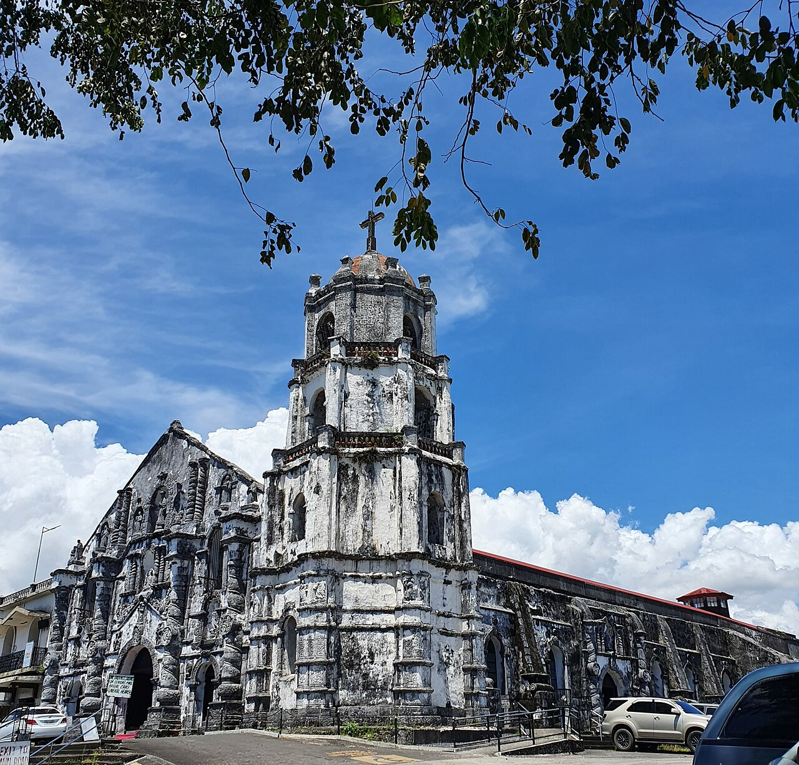
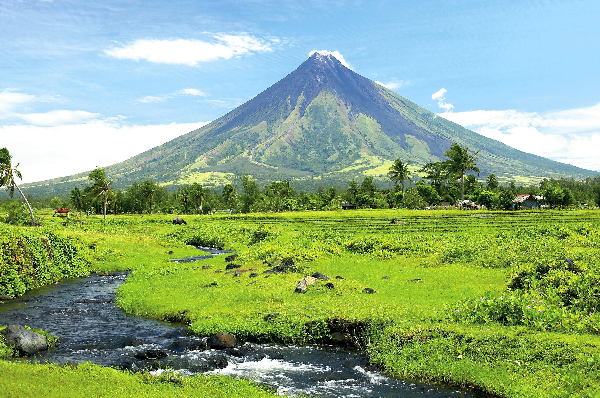
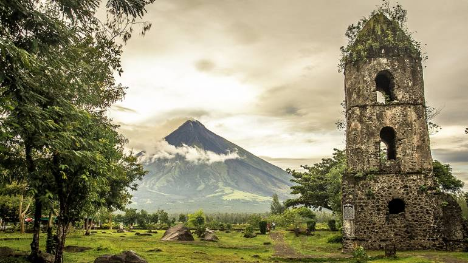
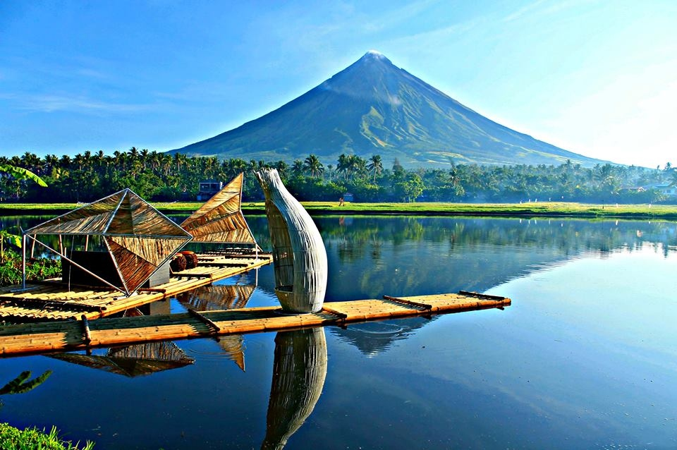
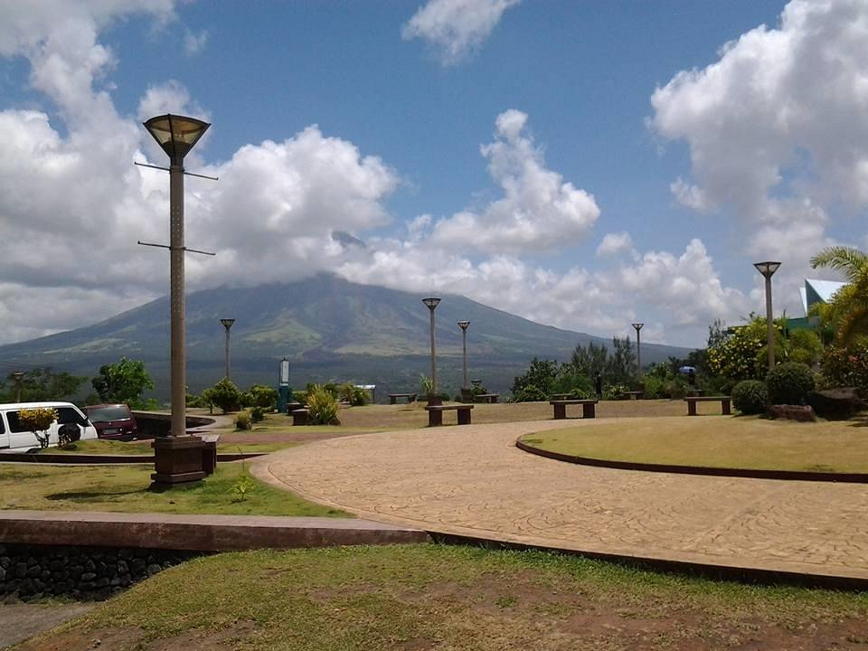
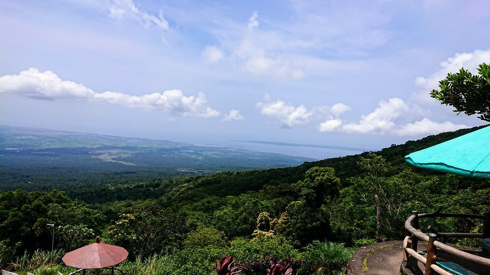
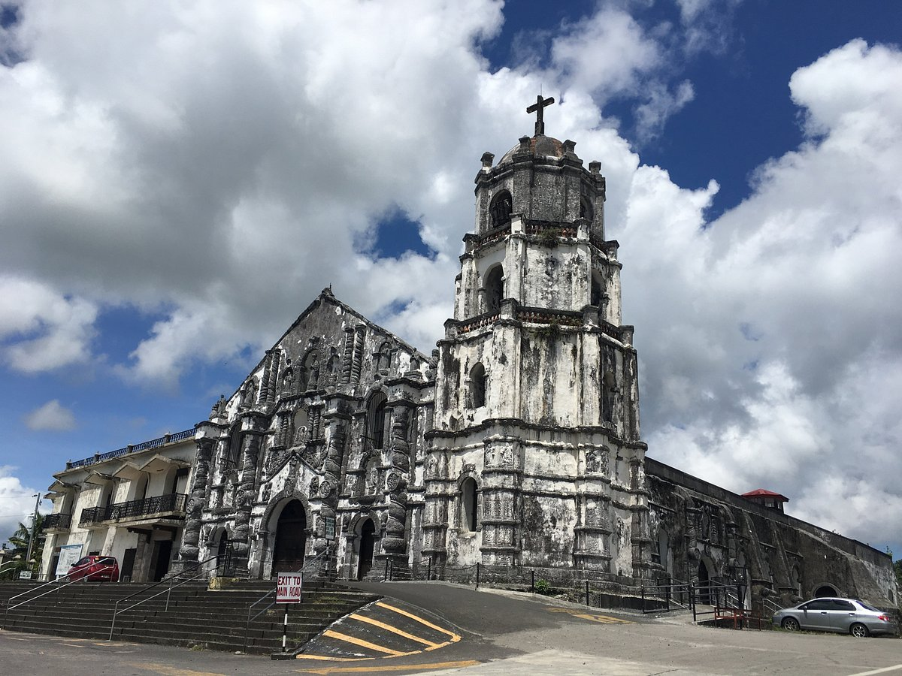

Discover Albay
Heart of Bicol. Soul of Adventure.
Heart of Bicol. Soul of Adventure.
Explore the most popular cities and municipalities in Albay




Albay is home to several cities and towns that offer a mix of culture, history, and natural beauty.
From busy urban centers to peaceful areas, each place gives visitors a unique experience in the province.

Famous volcano with a perfect cone shape.

Historic church ruins buried by eruption.

Peaceful lake with Mayon reflection.

Hill with panoramic Mayon view.

Old church with scenic Mayon view.

A high place near the volcano where you can enjoy cool air and scenic views.